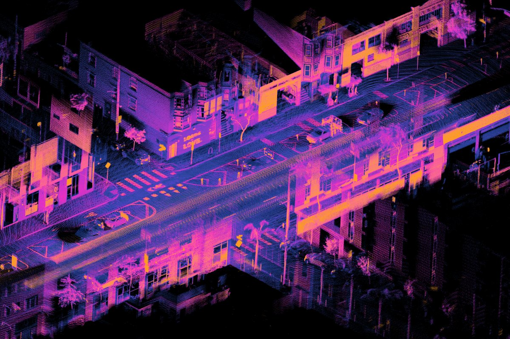

Digital Twin - Floor-Plan Reconstruction and Spatial Intelligence
Building a digital model of a real space and keeping it linked to the physical assets in it: reconstructing floor plans from scans and images, placing objects in them, and answering spatial questions about the result.
Keywords

1. Introduction
A digital twin is only useful if it matches the building it stands for. That starts with geometry: taking a scan, a point cloud or a plan image and recovering the walls, rooms and openings as clean, measurable shapes. On top of that geometry sit the assets, each one tied to its real counterpart, so the model can answer questions a person would otherwise walk the building to check: what is in this room, how far is it from that door, what changed since last month.
2. Goal
Goal
- Reconstruct a floor plan as clean geometry from scans, point clouds or raster plan images.
- Link physical assets to their position in the model so the twin stays in step with the real space.
- Answer spatial questions on the model, such as distances, adjacency and what is inside a room, through code rather than by hand.
3. Code and details on GitHub
The main project and its technical details are uploaded to GitHub, so please refer to the repository to understand the work in detail.
GitHub: https://github.com/Laudarisd/digital-twin-and-spatial-ai
Digital Twin - Floorplan 재구성과 Spatial Intelligence
실제 공간의 디지털 모델을 만들고, 그 안의 실제 자산과 연결된 채로 유지해요. 스캔과 이미지에서 평면도를 재구성하고, 그 안에 객체를 놓고, 결과에 대한 공간 질문에 답해요.
키워드
1. 소개
Digital Twin은 실제 건물과 맞을 때만 쓸모가 있어요. 그 시작은 기하예요. 스캔, Point Cloud, 평면도 이미지에서 벽, 방, 개구부를 깨끗하고 잴 수 있는 도형으로 되살리는 일이요. 그 기하 위에 자산이 올라가요. 하나하나 실제 대상과 묶여 있어서, 사람이 건물을 걸어 다니며 확인해야 할 것을 모델이 답해요. 이 방에 뭐가 있는지, 저 문에서 얼마나 떨어져 있는지, 지난달 이후 뭐가 바뀌었는지요.
2. 목표
목표
- 스캔, Point Cloud, 래스터 평면도 이미지에서 평면도를 깨끗한 기하로 재구성해요.
- 실제 자산을 모델 안의 위치와 연결해서 Twin이 실제 공간과 같이 움직이게 해요.
- 거리, 인접, 방 안의 물건 같은 공간 질문에 손이 아니라 코드로 답해요.
3. 코드와 자세한 내용은 GitHub에
메인 프로젝트와 기술적인 세부 내용은 GitHub에 올려 두었어요. 작업을 자세히 이해하시려면 저장소를 참고해 주세요.
GitHub: https://github.com/Laudarisd/digital-twin-and-spatial-ai